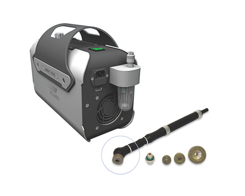
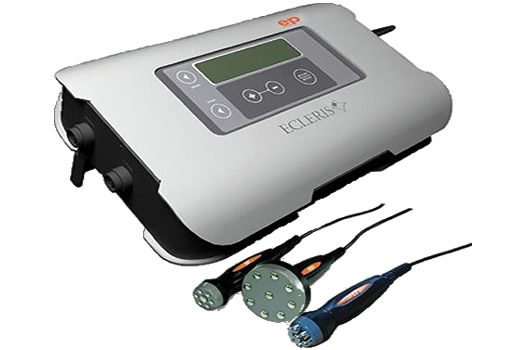

Cuando la Salud y la Belleza se encuentran en un mismo lugar.
Cosmetóloga Stefany es un centro de belleza ubicado en el barrio de Palermo, en la Ciudad Autónoma de Buenos Aires, habiendo comenzado en el año 2003 con nuestros tratamientos personalizados enfocados en el cuidado de la salud y belleza personal.
Filosofia de Trabajo
Profesionalidad: Nuestra premisa es rodearse de un equipo altamente cualificado, en constante actualización, que comparte la pasión por la belleza y el cuidado interior y exterior. Mínima Invasividad: Nuestra actividad se centra en tratamientos que dan soluciones sin riesgos para los pacientes ni bajas laborales. Servicio: Nuestro servicio se enfoca en considerar a cada cliente como único, partiendo de un diagnóstico preciso que identifique cual es la mejor técnica y productos a usar para el servicio.
Salud, Belleza y Bienestar
Por ello nos manejamos con el precepto de que “la salud, la belleza y el bienestar deben convivir en un espacio único”, dedicados al mimo y cuidado de los clientes que visitan el lugar, para “hacerles sentir bien por dentro y por fuera”. Aplicamos los mejores tratamientos y cosméticos, seleccionando lo que sabemos que va a funcionar, para ofrecerlos a nuestros clientes de forma exclusiva, creando sinergias entre las múltiples experiencias de belleza.
El concepto de Belleza
En Cosmetóloga Stefany manejamos un “Concepto de Belleza Integral”, consideramos que la Belleza debe estar integrada con la Salud y el Bienestar. La Belleza no puede tratarse en forma separada de los otros dos conceptos ya que existe una interdependencia muy fuerte con la Salud y el Bienestar. Como consecuencia, antes de definir que tratamiento de belleza aplicar, primero efectuamos un diagnóstico previo para identificar el tipo de afección, lo que determinará cuales son los mejores tratamientos aplicables.
Experiencia Unica
Tratamos de crear experiencias únicas para nuestros clientes, cuyo primer paso es siempre la realización de un diagnóstico preciso de la posible afección. Tenemos en cuenta la singularidad de cada persona, lo que es fundamental para lograr la maxima efectividad de cualquier tratamiento, y la satisfacción y felicidad de nuestros clientes frente a los resultados y objetivos logrados. Tanto en la estética facial como corporal, nuestros tratamientos son estrictamente personalizados, no aplicamos técnicas generales que pueden ser contraindicadas para las características de algún paciente en particular.
Tratamientos
Tratamientos Faciales
Higinene Facial Básica y Profunda
La higiene facial profesional tiene un efecto prolongado que permite mantener la piel sana por mayor tiempo. El eliminar la capa superficial de la piel permite que se tenga una mejor absorción de los nutrientes y de la hidratación que aportan las cremas de uso personal. Más allá de combatir la aparición de arrugas, la Higiene Facial permite: Lucir una piel más luminosa, suave y brillante Disminuir las líneas de expresión y otras producto del cansancio Permite que nuestra piel esté oxigenada, por lo que disminuye considerablemente la aparición de las arrugas, y de puntos negros Remover todas las impurezas y células muertas que obstruyen la correcta oxigenación e hidratación de la piel Retardar el envejecimiento lógico de la piel Es clave para eliminar el aspecto cansado y apagado.
Dermapen
Es una técnica totalmente aprobada que funciona mediante micropunciones en la piel, las que favorecen la entrada de los principios activos, los que según el tipo de piel, el especialista podrá incluir vitaminas, silicio, ácido hialurónico, etc. obligando a la misma a producir el colágeno para actuar en esas punciones. Es recomendable para aquellos que deseen mejorar su piel sin métodos quirúrgicos y para quienes deseen eliminar estrías de cualquier parte del cuerpo, así como cicatrices del acné o heridas, primeras arrugas y poros dilatados.
Cauterazación de verrugas
El procedimiento para eliminar verrugas con el que trabajamos es un procedimiento seguro y de muy corta duración que obtiene resultados definitivos. Para eliminar verrugas nuestro equipo médico emplea la cauterización facial. La cauterización facial permite eliminar verrugas en una sola sesión con resultados permanentes.
Otros servicios faciales
- Maquillaje
- cejas semiermanetes
- Pestañas punto a punto
Trataminetos Corporales
Masajes relajantes
Por lo general, el masaje se considera parte de la medicina integral. Los centros médicos lo ofrecen cada vez más como tratamiento, junto con el tratamiento estándar. Se puede utilizar para una amplia gama de afecciones médicas. Los estudios sobre los beneficios del masaje han demostrado que este puede:
Ayudar a reducir el estrés
Disminuir el dolor y la tensión muscular
Aumentar la relajación
Mejorar la función inmunológica
Depilación con cera
La depilación con cera se ha convertido en uno de los métodos más utilizados para la eliminación del vello. Es de los tratamientos más demandados y preferidos, tanto para mujeres como para hombres, debido a sencilla aplicación y efectos duraderos. La depilación con cera es una técnica que consiste en la extracción del pelo por debajo de la superficie de la piel, logrando desprender el vello desde la raíz y retrasando su crecimiento. Se puede aplicar en casi todas las zonas del cuerpo, ya sea en el rostro o grandes superficies como las piernas o los brazos. Entre sus beneficios encontramos:
Se retrasa el crecimiento del vello
Es un método respetuoso con la piel
Ideal para distintos tipos de pieles
Se produce menos irritación
Peptonas y vitamina c en glúteos
Las Peptonas son el mejor tratamiento no invasivo que ayuda a aumentar el volumen y tono muscular de los glúteos, dando como resultado un desarrollo, crecimiento y tonificación muscular con resultado inmediato y efectivo, levanta, forma y da mayor volumen. Por otro lado, la vitamina C estimula la acción de los "fibroblastos", que son células que le dan soporte a la piel actuando desde la primera aplicación y en cada aplicación el resultado será mejor que el anterior.
Sueroterapia
La sueroterapia es un tratamiento basado en la aplicación intravenosa de sueros específicos dependiendo de las necesidades del paciente para mejorar su bienestar, salud y aspecto físico. Su aplicación ayuda a estimular los mecanismos de defensa y a la desintoxicación, regeneración y reparación del propio organismo. Se considera un método terapéutico que activa la capacidad de auto curación del paciente.
Otros servicios corporales
- Cauterización de verrugas corporales
Aparatología
Radiofrecuancia
Este sistema aplica una combinación avanzada de Radiofrecuencia y Tterapia de Vacío para ofrecer los tratamientos faciales y corporales más efectivos del mercado. El resultado de este tratamiento es una piel más suave y una reducción en el aspecto de las arrugas. La sensación de tirantez en el rostro es inmediata, pero el efecto de tensado mejora de forma gradual y progresiva un mes después de iniciado el tratamiento.
Minivac (Microdermobración)
La microdermoabrasión es un tratamiento rápido, no quirúrgico, indoloro y cómodo, que se aplica a la piel de la cara para eliminar impurezas o células muertas y renueva capas superficiales de la piel. Permite resolver cicatrices de acné, arrugas o líneas de expresión por fotoenvejecimiento, entre otros.
EP (Electroporación)
La electroporación o mesoterapia virtual, es una técnica no invasiva e indolora que consiste en la emisión de una onda electromagnética pulsada, atérmica y no ionizable que produce una alteración temporal en el potencial eléctrico de la membrana plasmática.Es una excelente herramienta estética ya que permite el paso de sustancias a través de la piel.
